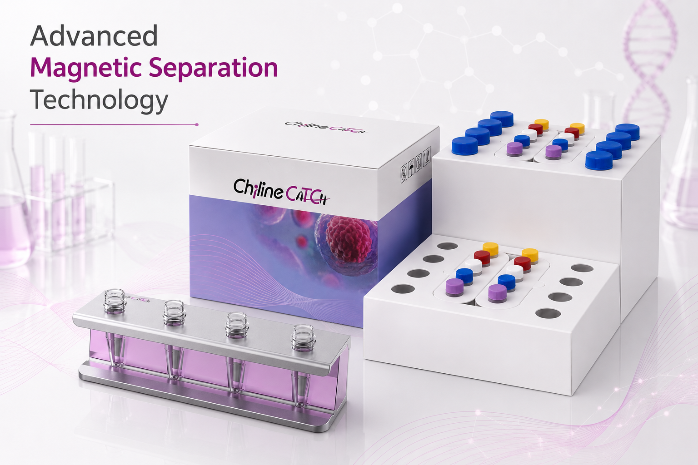
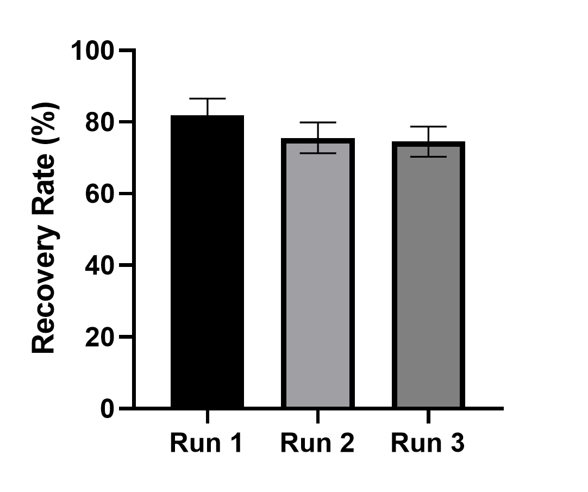
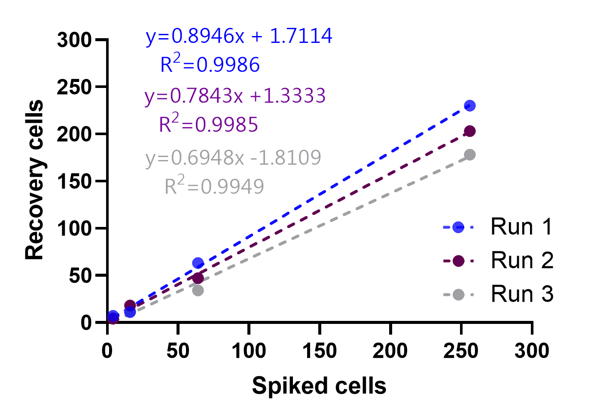
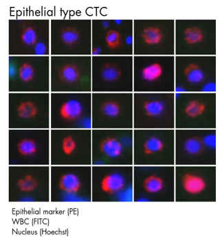
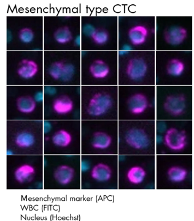
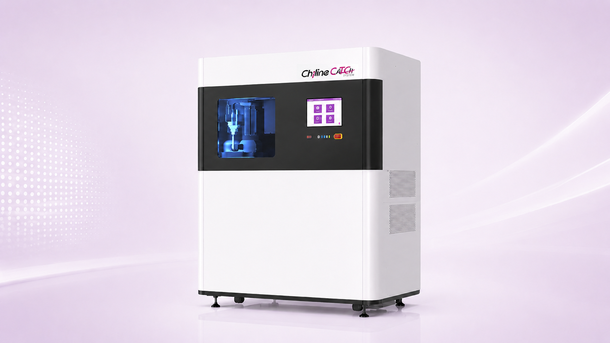

Product type
Manual CTC reagent kit
The Chiline CATCH® Circulating Target Cell Enrichment Kit uses osmotic pressure differences to remove red blood cells, then identifies white blood cells with specific antibodies and completes white blood cell removal with a patented magnetic rack. The downstream workflow continues with automated immunofluorescence staining and image interpretation to support a complete CTC separation process.


Recovery rate of the Chiline CATCH system in three independent SKBR3 cell-spiking experiments. Mean recovery was approximately 80% with an intra-run CV <10%.

Linearity of cell recovery across three independent SKBR3 cell-spiking experiments. Excellent linearity was observed with R2 >0.995 in all runs.
In depletion testing, the system achieved >99.8% removal of unwanted blood cells from a 107 WBC cell suspension, supporting efficient rare-cell enrichment from complex blood samples.


| Reagent kit name | Model |
|---|---|
| Circulating Target Cell Enrichment Kit (Epithelial) | CEK16-E |
| Circulating Target Cell Enrichment Kit (Mesenchymal) | CEK16-M |
| Circulating Target Cell Enrichment Kit (Epithelial+Mesenchymal) | CEK16-EM |

Designed for laboratory adoption of the reagent kit, used with a magnetic rack, fluorescence microscope, and AI analysis software for CTC enrichment and review.

Chiline CATCH® CTC Enrichment System
Use it with the Chiline CATCH® circulating target cell enrichment reagent/consumables kit to integrate separation, staining, and image analysis into a standardized CTC testing SOP.

Supports image acquisition and AI-assisted analysis to connect with the CTC review workflow.